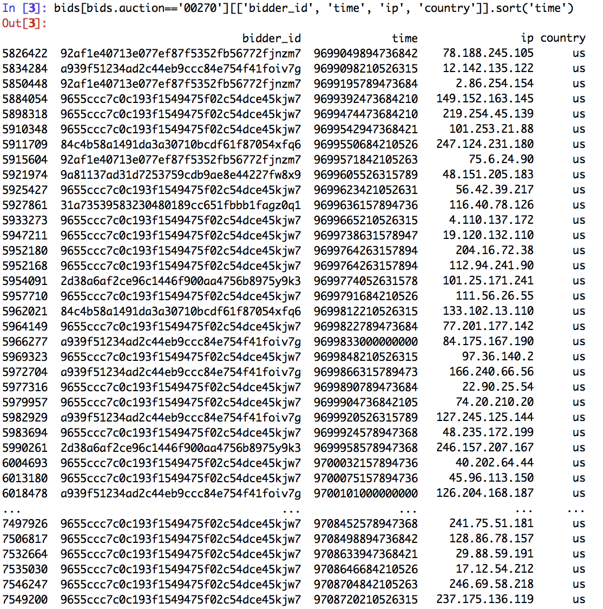
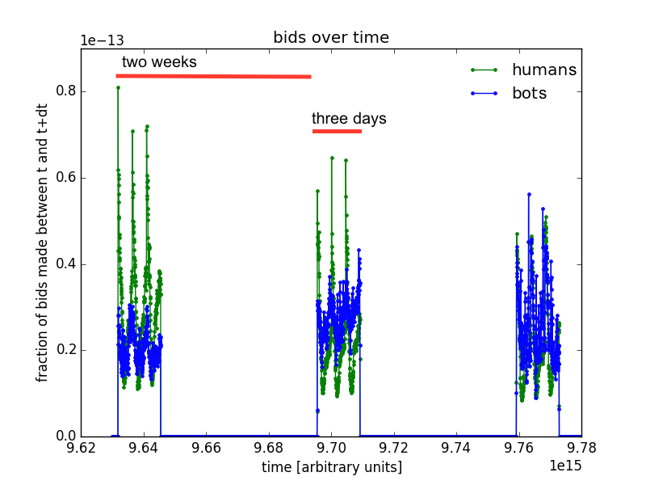
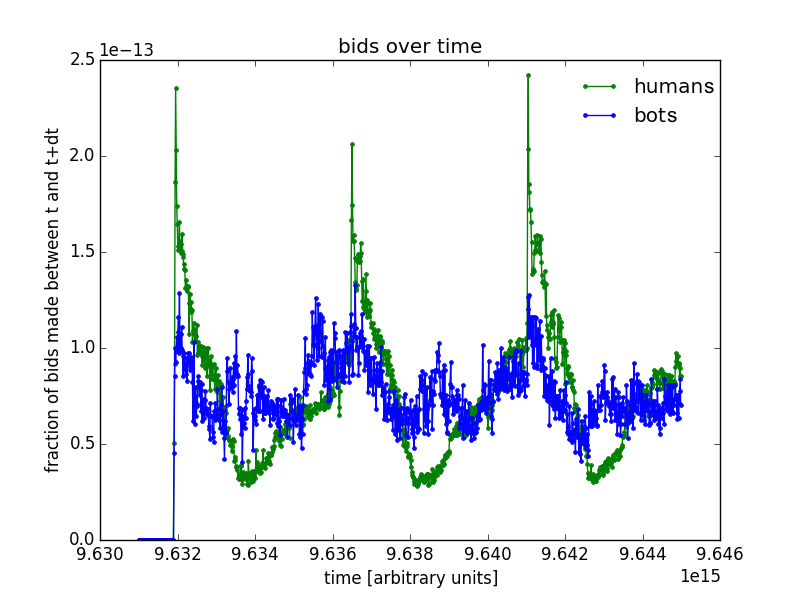

|
The data consists of a list of bid events (auction id, user id, time, IP, location) and a table, X, with the bidder id's, the hashed contact and payment addresses and whether the bidder is a robot or a human. The interesting part of this problem is to find ways to characterize bidding behaviour - to generate features that can be inserted into X. Then X can be used to train a classification algorithm to distinguish between bots and humans. The most useful features I identified were: the median time between a user's bid and that user's previous bid, the mean number of bids a user made per auction, the entropy for how many bids a user placed on each day of the week, the maximum number of bids in a 20 min span, the total number of bids placed by the user, the average number of bids a user placed per referring URL, the number of bids placed by the user on each of the three weekdays in the data, and the minimum and median times between a user's bid and the previous bid by another user in the same auction. Here's the script I used to process the data and generate predictions. |
Another useful observation is that users which place bids from multiple countries often only place bids from one country in a given auction - this suggests that multiple people may be placing bids from the same account, but that only one individual on the account usually follows any one auction. |
 |
|
|
|  |  |
|
In the bids/unit time histogram, each of the three chunks contains about three periods worth of
bidding activity, which suggests that each chunk of data is probably three days. The durations
of each chunk are the same (+/- 1 mystery unit) and the durations of the gaps between each chunk are also the same, which
suddenly made it very easy to calculate the length of a day. The duration of the
entire data set is 31 times one_day. Had the data chunks not all been so suggestively
the same duration, the positions of peaks in the
autocorrelation function of the bid histogram could have been used to calculate the length of a day.
It would be reasonable to expect to need to shift the bids/time histogram along the time axis depending on what time zone the bidder was in. This is tricky though, since IP is not a reliable indicator of location. And the daily spike in human bidding activity suggested that shifting the bids/time histogram might not actually be very instructive. |
| Because the data is in three chunks, it's impossible to tell if there are any complete auctions - if the first bid in the data set is sufficiently far from t_start, then it's reasonable to assume that this was the first bid in the auction (ditto for the last bid, where the last bid falls reasonable far from the end of the data set). I would have liked to have created a description of the bidding strategy which included where in the auction a user was bidding - did the user bid only at the last minute? Or only in the beginning of an auction? These behaviours correspond to two different bot strategies: the first bot exists to drive up the price, while the second bot is designed to rapidly make a lot of bids to finish the auction. However, there were no clues in the bidding data to suggest that any of the auctions were complete. |
|
|
One way to characterize the variation in how bids were placed is the entropy.
A concrete example of the entropy is the IP entropy: N!/(N_IP1!
NIP2!... NIPn!). N is the total number of bids and N_IPn
is the total number of bids placed from the nth IP. The entropy is a measure
of how both randomly distributed the bids are, how many IPs there
are and how many bids there are. A bidder that places all their bids from the same
IP has an entropy of N!/N! = 1. Because the entropy is very large, it is smarter to
calculate the log of the entropy.
Entropy also turned out to be a useful way to characterize how a user's bidding activity is distributed over each of the three days of the week as well as over the referring URLs. |
| The model got additional mileage out of the fraction of bids a user place in each of the 199 countries, as well as the fraction of IPs from which a user placed a bid from which another user who was a bot also placed a bid. |
I was really stumped about why there were hardly any bids placed by robots between 11 and 14 days before the end of the auction. I wondered if this behaviour might have helped to explain why we only got to see three days out of every two weeks in the data.... |
|
|
|
|
|
|
|
|
|
Many of these account names have been hashed to something that starts with "a3d2de7675556553a5f08e4c88d2c228". I stripped off the last five elements of the payment_account and address hashes and looked for duplicates. Using a pivot table with info about repeated values of address[0:-5] and payment_account[0:-5] didn't improve CV score. |